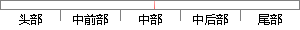

其中，\beta_1,\beta_2\ldots,\beta_n是自变量的偏回归系数，X=x1,x2…
片段位置图

相似结果|
相似片段 1：一个单位对 y 的效应，即x2 对 y 的偏回归系数。如果两个自变量 x1，x2与同一个因变量 y 呈线相关时，可以用二元线性回归模型描述为：y = b0 + b1x1 + b2x2 + e其中 b0
相似片段 2：海马体积（X2）作为自变量被引入方程，其中 X1的偏回归系数 b1为－76.47（p=0.003），标化偏回归系数为β1=－0.588，标准误为 20.07；X2的偏回归系数 b2为－0.002（p
|
※ 片段修改建议 ※
近似词参考：- 其中：此中 个中
系统自动生成语句：此中，\beta_1,\beta_2\ldots,\beta_n是自变量的偏回归系数，X=x1,x2…
注：本片段修改建议为系统自动生成，仅供参考。